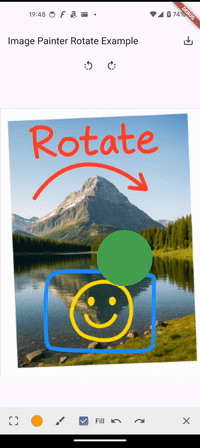
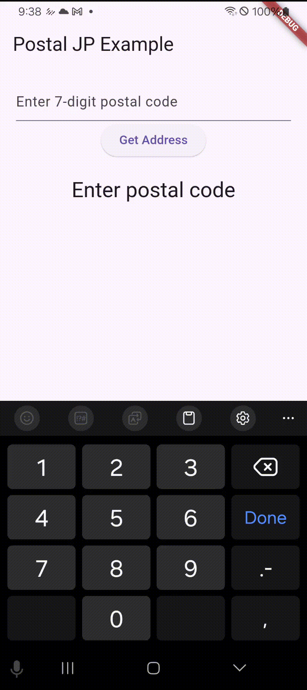
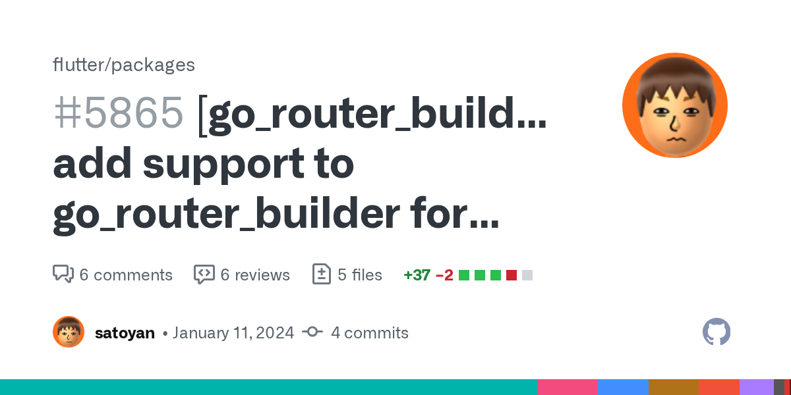
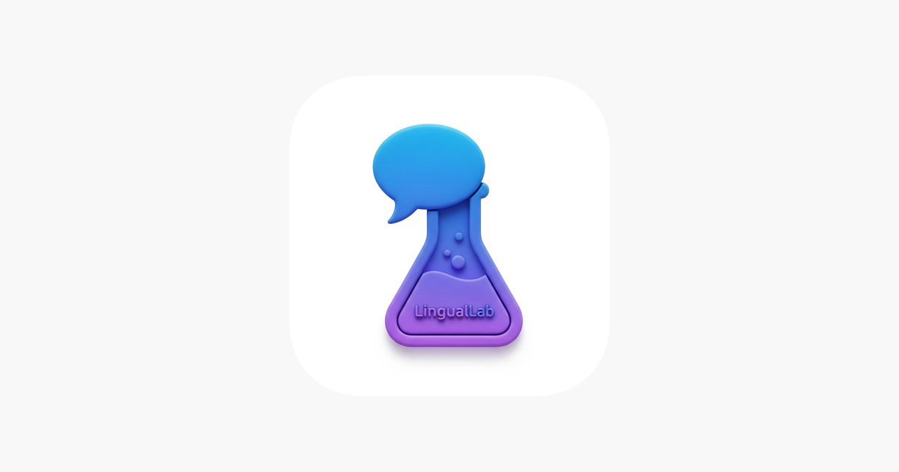

image_painter_rotate
pub.devFlutter 向けの画像アノテーションウィジェットです。回転、図形描画、テキスト追加、Undo/Redo、画像エクスポートなどに対応しています。
Windows アプリケーション、バックエンド、Flutter を用いたモバイルアプリの開発に携わってきました。近年は特に Flutter を中心に取り組んでいます（2026年現在）。このページで紹介しているものは、個人で取り組んだ成果物のみです。

Flutter 向けの画像アノテーションウィジェットです。回転、図形描画、テキスト追加、Undo/Redo、画像エクスポートなどに対応しています。

7桁の郵便番号から日本の住所情報を取得する Dart / Flutter パッケージです。住所情報と API エラーを型付きで扱えます。

`StatefulShellBranch` で `NavigatorObserver` のリストを扱えるようにした OSS コントリビューションです。

AI を使って読解教材を生成し、音読録音、単語抽出、単語カード化、オフライン音声再生までできる語学学習アプリです。
Android と iOS でシステムの手動プロキシ設定を検知し、Flutter アプリの通信に適用する方法について書いた記事です。
TypeScript を使って After Effects などの Adobe アプリを操作するための開発環境や実装方法をまとめた記事です。
iOS で PAC ベースの自動プロキシがそのままでは効かない理由と、その対応方法について整理した記事です。